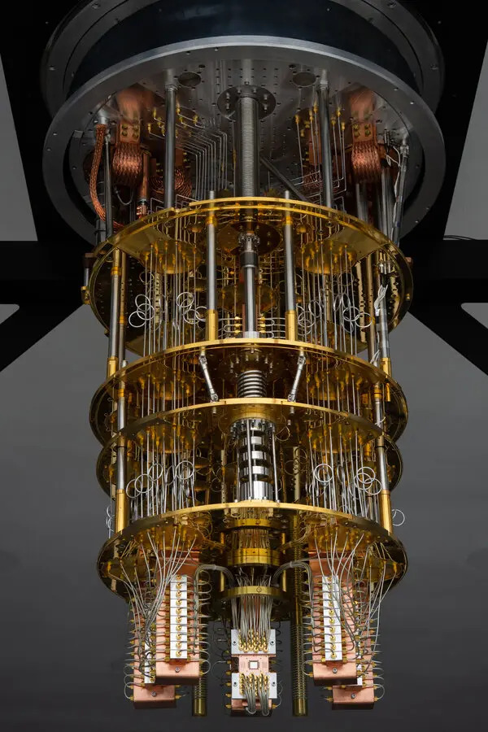
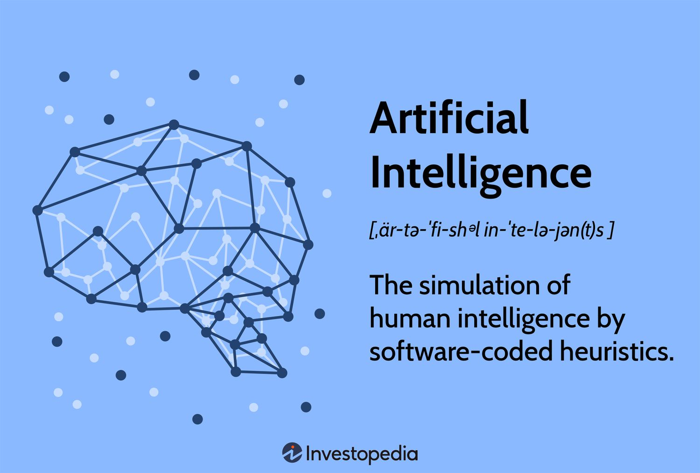

Prihodnost je tukaj
Umetna inteligenca


Peta generacija predstavlja prelomnico v zgodovini računalništva. Namesto zgolj procesiranja podatkov, današnji sistemi temeljijo na umetni inteligenci (AI), strojnem učenju in napredni obdelavi naravnega jezika.
Ključni stebri pete generacije:
- Umetna inteligenca: Računalniki se učijo iz ogromnih količin podatkov.
- Kvantno računalništvo: Reševanje problemov, ki so bili prej nerešljivi.
- Avtonomni sistemi: Tehnologija, ki deluje brez nenehnega človeškega posredovanja.
To obdobje ni le nadgradnja hitrosti, temveč sprememba paradigme. Računalniki postajajo naši inteligentni partnerji, medtem ko kvantni procesorji odpirajo vrata v prihodnost, kjer bodo meje mogočega postavljene neprimerno dlje, kot smo si lahko predstavljali le nekaj desetletij nazaj.